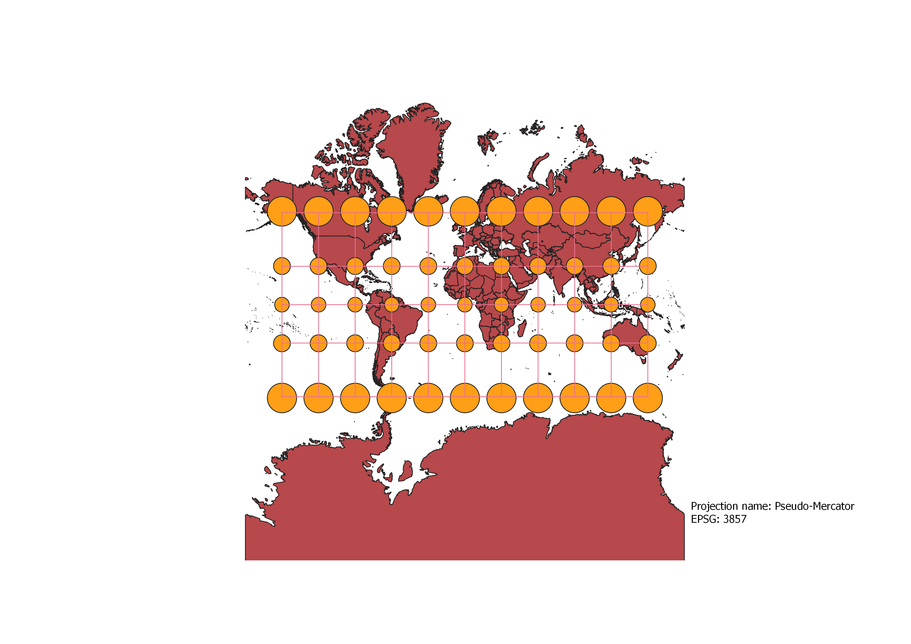
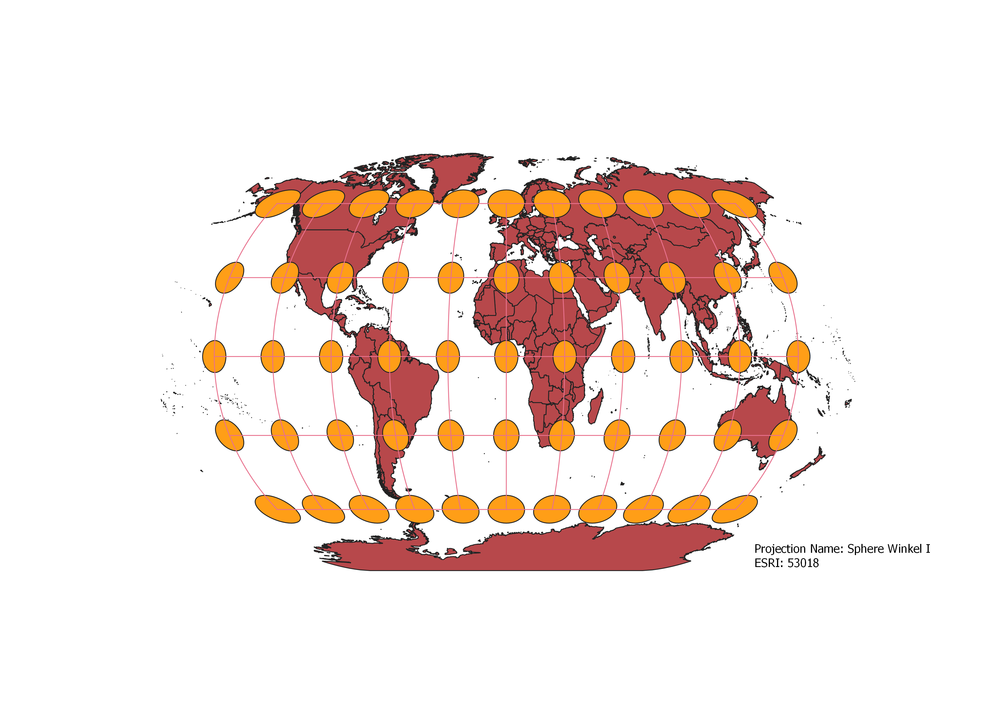

In this project I learned how to display images in different projections
How to make projections.
I loaded the world map vector in QGIS then changed the projection in QGIS to what I wanted it to be and made sure that the indicatrix mapper plug in was checked.
After that I created a new print layer so that I could add the projections to the map and export it as a PNG. I repeated the same process for the different projections I did.
WGS84 Projection
The WGS84 projection shows size and shape distortion the closer you get to the poles.

Aitoff Projection
The World Aitoff projection increases distortion the closer you get to the poles and it increases shape distortion the closer you get to 180 and negative 180 degrees.

EPSG 3857 Projection
In the Pseudo-Mercator projection, size distortion is very prominent with the areas at the poles experiencing the most distortion.

EPSG 54008 Projection
The World Sinusiodal projection shows the earth in the shape of a spinning top with the amount distortion increasing as you approach the poles and go towards 180 and negative 180 degrees. Size and shape distortion are prominent in this projection.

ESRI 54009 Projection
The World Mollweide projection shows size distortion as you go closer to the poles and 180 and negative 180 degrees.

ESRI 54027 Projection
The World Equidistant Conic projection shows the highest size and shape distortion at one of the poles in this case the south pole. The distortion increases the closer you get to the south pole and the prime meridian.

ESRI 54034 Projection
The World Cylindrical Equal Area shows shape distortion at the poles. Distortion is also observed in some places like the part of the Atlantic Ocean east of Argentina.

ESRI 102016 Projection
The North Pole Azimuthal Equidistant projection shows size and shape distortion increasing the closer you get to the south pole and 180 and negative 180 degrees.

ESRI 53018 Projection
The Sphere Winkel I projection shows more size distortion as you approach the poles and 180 and negative 180 degrees.

EPSG: 3857, 53018, 54034, 54027, 102016, and two additional projections that you choose.
Data used for this project
Download Natrual Earth 1:10m Cultural Vector